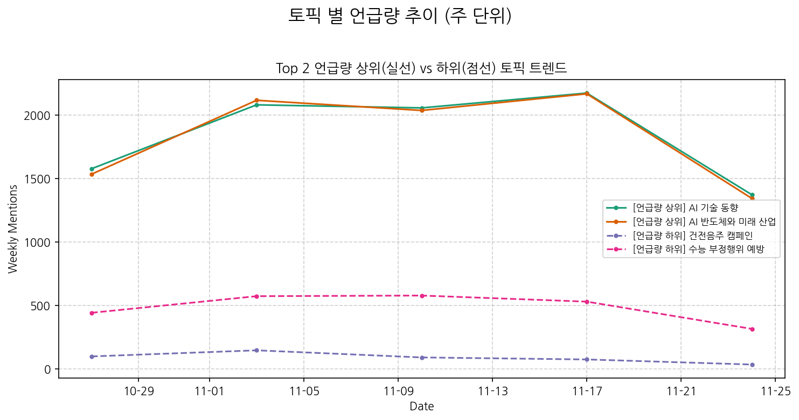
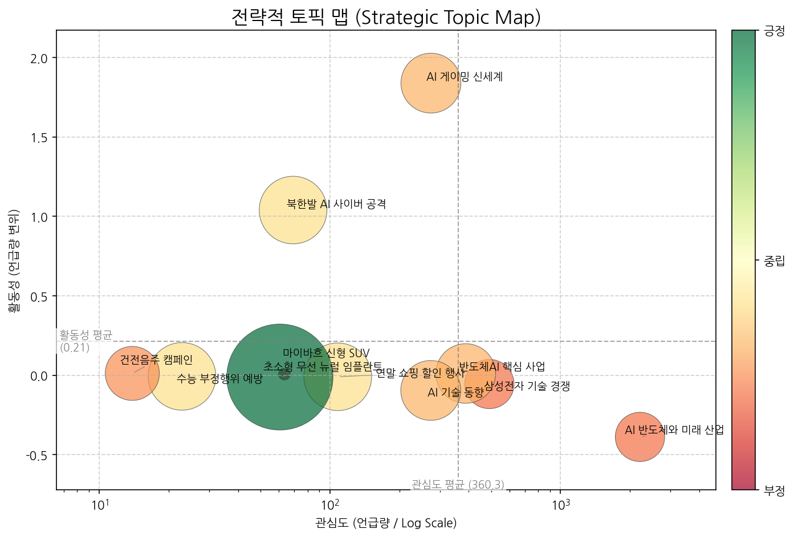
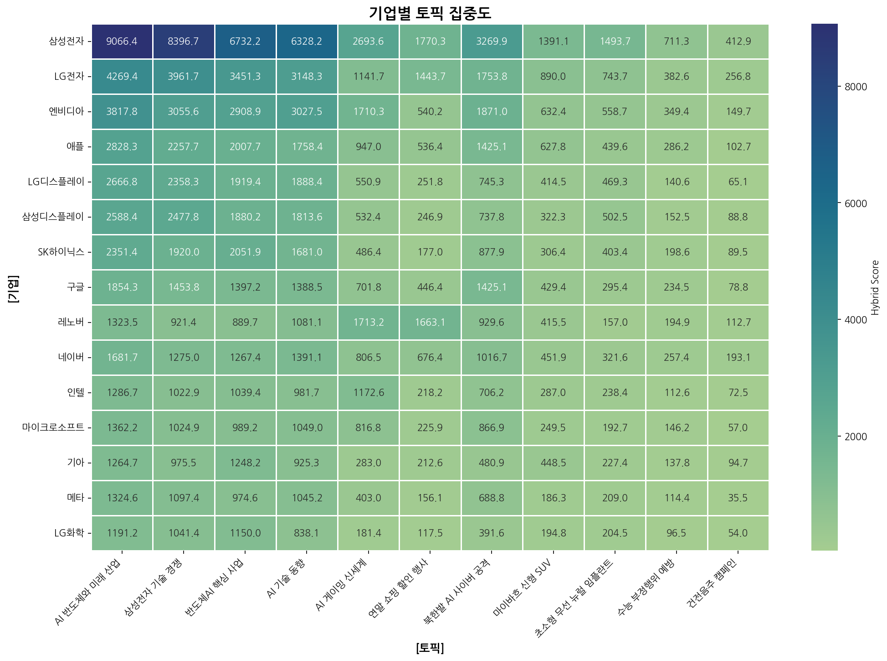
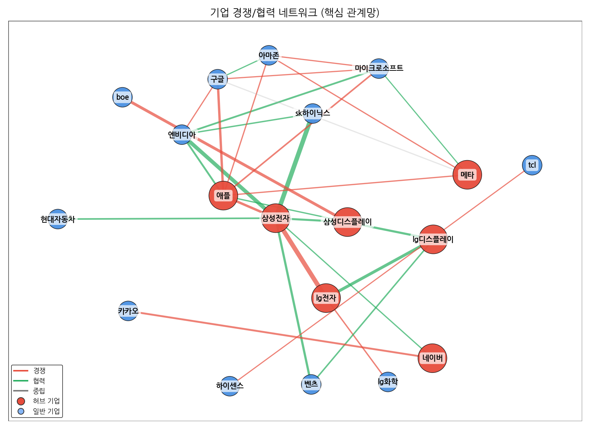
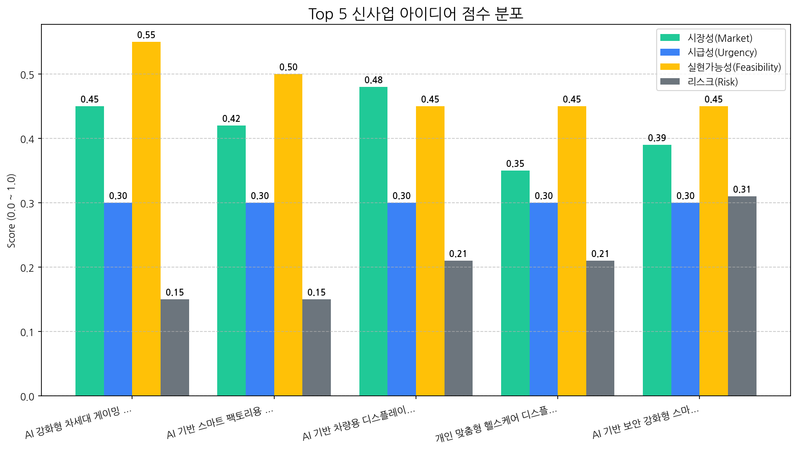

기간: 2025.10.30 - 2025.11.28
지난 한 달간 디스플레이 시장은 "AI 강화형 차세대 게이밍 디스플레이 패널 (OLED)"이 압도적인 트렌드로 부상하며 기술 및 수요 변화의 중심에 섰습니다. 특히 "AI 게이밍 신세계"라는 키워드로 요약되는 시장의 뜨거운 관심은 관련 제품군의 폭발적인 성장 잠재력을 시사합니다. 이는 단순한 디스플레이 기술 발전을 넘어, AI 기술과의 융합을 통해 게이밍 경험의 혁신을 추구하는 시장의 근본적인 변화를 의미합니다.
AI 강화형 차세대 게이밍 디스플레이 패널 (OLED) 시장 선점: "AI 게이밍 신세계"라는 트렌드는 우리에게 AI 기술을 통합한 OLED 패널 분야에서 시장 선점이라는 전례 없는 기회를 제공합니다. AI 기반의 초저지연, 실시간 그래픽 최적화, 사용자 맞춤형 몰입감 증대 기능은 기존 게이밍 디스플레이의 한계를 뛰어넘는 새로운 가치를 창출할 수 있습니다. 이는 고부가가치 프리미엄 시장을 공략하고, 경쟁사 대비 기술 리더십을 확고히 할 수 있는 절호의 찬스입니다.
현재 분석된 데이터 상으로는 "N/A"로 표기된 뚜렷한 외부 위협 요인은 발견되지 않았습니다. 그러나 AI 게이밍 시장의 빠른 성장 속도를 감안할 때, 잠재적인 기술 격차 심화, 신규 경쟁자의 출현, 또는 AI 기술 라이선싱 관련 규제 변화 등의 리스크는 지속적으로 모니터링해야 할 필요가 있습니다.
AI 게이밍 OLED 패널 포트폴리오 강화 및 시장 주도권 확보: 다음 분기에는 AI 강화형 차세대 게이밍 OLED 패널의 연구 개발 가속화 및 양산 준비에 모든 역량을 집중해야 합니다. 특히 AI 기술의 구체적인 구현 방안(예: AI 기반 업스케일링, AI 프레임 생성, AI 기반 반응 속도 향상 알고리즘 등)을 명확히 하고, 이를 통해 타사 대비 차별화된 성능과 경험을 제공하는 제품을 개발하는 데 주력합니다. 또한, 잠재 고객사(게이밍 기기 제조사, 게임 개발사)와의 전략적 파트너십을 강화하여 시장 출시 초기부터 강력한 수요를 창출하고, AI 게이밍 디스플레이 시장의 표준을 제시하며 주도권을 확보하는 것을 최우선 목표로 삼아야 합니다.
AI 기술 발전과 함께 OLED, 반도체 등 핵심 디스플레이 기술 경쟁이 심화되고 있으며, 특히 게이밍 분야에서의 AI 기술 접목이 새로운 성장 동력으로 주목받고 있습니다.

| 토픽 | 요약 | 핵심 키워드 |
|---|---|---|
| AI 반도체와 미래 산업 | AI 기술, 반도체, 디스플레이(OLED) 산업의 핵심 기업(삼성전자, 갤럭시)들이 중국, 미국과 경쟁하며 한국의 미래 차세대 산업(전기차 등)을 이끌어가는 내용입니다. 3분기 실적 및 신제품 출시가 주목받고 있습니다. | ai, 기술, 반도체 |
| 삼성전자 기술 경쟁 | 삼성전자가 AI, OLED, 반도체, 배터리, 스마트폰, TV, 차량용 디스플레이 등 다양한 분야에서 중국, 미국, LG 등과의 기술 경쟁을 통해 미래 사업을 이끌어갈 핵심 기술 개발에 집중하고 있음을 보여줍니다. | ai, oled, 기술 |
| 반도체AI 핵심 사업 | 반도체, AI, 로봇, 배터리 등 핵심 첨단 기술 분야의 사업 현황, 기업 활동, 기술 개발, 생산 및 매출 동향에 대한 뉴스입니다. | 반도체, ai, 핵심 |
| AI 기술 동향 | AI 기술 혁신과 차세대 디스플레이, 반도체 산업의 미래를 한국 기업들이 주도하며 지역 경제 발전 및 국제 협력 방안을 모색합니다. | apec, ai, 기술 |
| AI 게이밍 신세계 | 인텔 AI PC와 최신 OLED 모니터를 중심으로, 지스타에서 체험 가능한 게임 오디세이, 3D, 모바일 등 다양한 게이밍 경험을 레노버와 함께 소개합니다. | 게임, 오디세이, 게이밍 |
| 연말 쇼핑 할인 행사 | 연말 시즌을 맞아 브랜드별 인기 상품에 대한 할인 행사 및 특별 혜택을 제공하며, 고객들의 구매를 유도하는 내용입니다. | 할인, 상품을, 혜택을 |
| 북한발 AI 사이버 공격 | 북한의 AI 기반 해킹 공격이 기업과 개인의 스마트폰, PC 등 기기에서 발생하는 보안 위협과 데이터 유출, 서비스 관리 문제를 다룹니다. | 보안, 해킹, ai |
| 마이바흐 신형 SUV | 메르세데스 마이바흐의 새로운 하이브리드 SUV 콘셉트 차량에 대한 소식으로, 특히 폴리곤 디자인과 혁신적인 조향 시스템 등 차량의 디자인과 기술적인 특징을 다루고 있습니다. | 마이바흐, 주행, 폴리곤 |
| 초소형 무선 뉴럴 임플란트 | 연구팀이 완전 무선 구동하는 초소형 마이크로 LED 기반 뉴럴 임플란트 기술의 한계를 극복하고 차세대 디스플레이 및 뇌파 측정 가능성을 연구하고 있습니다. | 연구팀은, 초소형, 교수 |
| 수능 부정행위 예방 | 2026학년도 수능 당일, 수험생은 수험표를 반드시 지참해야 하며, 4교시 한국사 시간에 부정행위로 간주될 수 있는 전자식 통신, 블루투스, LCD LED 등 특정 물품 반입을 금지하고 있습니다. | 시험, 수능, 시험장 |
| 건전음주 캠페인 | 오비맥주와 역전할머니맥주가 미성년 음주 예방을 위한 전국 캠페인을 벌여 주류 판매 시 신분증 확인을 적극적으로 진행한다. | 음주, 귀하신분, 캠페인을 |

해당 토픽: AI 게이밍 신세계
권고 전략: AI 게이밍 시장의 긍정적 모멘텀을 활용하여 최신 OLED 모니터와 연계된 게이밍 경험을 강화하고, 관련 신제품 출시 및 마케팅을 집중합니다.
해당 토픽: 북한발 AI 사이버 공격
권고 전략: AI 기반 사이버 공격의 증가 추세를 주시하며, 디스플레이 제품 및 관련 서비스의 보안 강화 솔루션을 개발하고 고객들에게 제공합니다.
해당 토픽: AI 반도체와 미래 산업, 삼성전자 기술 경쟁, 반도체AI 핵심 사업, AI 기술 동향
권고 전략: AI 반도체 및 관련 기술 생태계의 전반적인 발전을 지원하며, 차세대 디스플레이와의 시너지를 위한 연구 개발 투자를 지속합니다.
해당 토픽: 연말 쇼핑 할인 행사, 마이바흐 신형 SUV, 초소형 무선 뉴럴 임플란트, 수능 부정행위 예방
권고 전략: 직접적인 사업 연관성이 낮은 토픽에 대해서는 정보 수집을 최소화하고, 핵심 사업 전략에 집중합니다.
주요 디스플레이 경쟁사들은 AI 반도체와 미래 산업을 핵심 전략으로 삼고 있으며, 특히 삼성전자와 SK하이닉스는 파트너십을 통해 이러한 흐름에 적극적으로 대응하고 있습니다.


| 관계 | 유형 | 강도(언급빈도) | 주요 연관 근거 |
|---|---|---|---|
| sk하이닉스 ↔ 삼성전자 | partnership | 840 | [실리콘 디코드] 일본, 2나노 시대 '소재 패권' 선언…한국 거점에 대규... 삼성·SK가 미는 ' 마이크로LED 광통신'...AI 메모리 병목 해결사로 주목 반도체 장비 관련주, '껑충껑충' 유니테스트·기가레인·엑시콘... '주르... |
| lg전자 ↔ 삼성전자 | rivalry | 538 | 재고털이 나선 삼성·LG … '풍전등화' TV 사업 돌파구는 "3분기 나란히 적자"…삼성·LG TV, 中 공세 속 반전 카드 있을까 자존심 내려놓은 TV 생존전략…삼성은 OLED, LG는 LCD 강화 |
| 삼성전자 ↔ 엔비디아 | partnership | 398 | 엔비디아와 '깐부 동맹'…반도체 투톱 주가 어디까지 오를까 [31일 대학가] 삼육대·한양대·연세대 사법리스크 털고 관료주의 타파 … JY의 삼성 'AI 대전환' 승부수 |
| boe ↔ 삼성디스플레이 | rivalry | 288 | 삼성, 中 BOE와 OLED 분쟁 승리 삼성디스플레이, 중국 BOE 와 OLED 특허 분쟁 승리 아이폰 사랑에 힘입어?…패널·카메라 공급하는 LGD·LG이노텍 하반기 실... |
| 구글 ↔ 메타 | neutral | 107 | 10월 5주 주요 제조업 전망 [체험기] 낫싱 폰(3), 레트로 외관에 '에센셜' AI 담다 삼성, 2번 접는 트라이폴드폰…현대차, 로봇·수소차 'K테크 과시' |
AI 분석 실패 또는 특이사항 없음.
디스플레이 산업은 지정학적 불안정, 공급망 교란, 기술 변화 등 복합적인 전략적 리스크에 직면하고 있으며, 이를 완화하기 위한 능동적인 위험 관리 및 공급망 다변화 전략이 필수적입니다.
(감지된 주요 리스크 시그널 없음)
대상: 신규 기술 개발 지연, 핵심 인력 이탈
전략: 고위험 신규 사업 투자 중단, 경쟁사 대비 파격적인 보상 체계 구축 및 인력 유출 방지 프로그램 강화
대상: 공급망 불안정, 제조 공정 불량률 증가, 사이버 보안 위협, 원자재 가격 변동성
전략: 복수 공급망 확보 및 장기 계약 체결, AI 기반 공정 모니터링 시스템 구축 및 품질 관리 강화, 보안 시스템 업데이트 및 침해 대응 훈련 실시, 선물 계약 및 대체 원자재 탐색
대상: 자연재해, 대규모 생산 설비 고장
전략: 보험 가입 확대 및 재보험 계약 검토, 설비 유지보수 계약 강화 및 예방 정비 활동 집중
대상: 환율 변동, 거시 경제 불확실성, 사소한 시장 동향 변화
전략: 정기적인 시장 분석 및 모니터링 강화, 환 헤지 전략 운용, 비상 자금 확보 및 유연한 사업 운영 계획 수립
주요 동력: 현재 디스플레이 산업의 주요 동력은 AI 기술 발전과 연계된 차세대 디스플레이 기술 개발입니다. AI 반도체와의 시너지를 통해 전기차, 스마트폰 등 다양한 응용 분야로의 확장이 기대되며, 이는 한국 기업의 미래 성장 동력으로 부각되고 있습니다. 다만, AI 및 반도체 관련 토픽의 전반적인 모멘텀이 중립 또는 부정적인 수준에 머물러 있어, 단기적인 시장 기대치는 다소 낮습니다. 이는 AI 기술의 잠재력에도 불구하고, 현재 시장이 해당 기술의 직접적인 성장 모멘텀보다는 거시적 흐름 속에서 미래 성장 가능성에 더 주목하고 있음을 시사합니다.
부상하는 기회: 새롭게 부상하는 기회 영역은 'AI 게이밍 신세계'와 같은 특정 응용 분야에서 나타나는 긍정적인 모멘텀입니다. 특히 AI 강화형 차세대 게이밍 디스플레이 패널 (OLED)은 이러한 긍정적 신호를 중심으로 기회를 포착할 수 있는 유망한 분야로 판단됩니다. 이는 AI 기술이 특정 소비재 시장에서 혁신적인 경험을 제공하며 새로운 수요를 창출할 수 있음을 보여줍니다.
집중 영역: AI 강화형 차세대 게이밍 디스플레이 패널 (OLED) 개발 및 마케팅에 자원을 집중해야 합니다. 'AI 게이밍 신세계'라는 구체적인 응용 분야에서의 긍정적 모멘텀을 활용하여, AI 기술을 접목한 혁신적인 게이밍 디스플레이 솔루션을 선제적으로 개발하고 시장을 선도해야 합니다. OLED의 강점을 AI와 결합하여 차별화된 성능과 사용자 경험을 제공하는 데 주력해야 합니다.
모니터링 영역: AI 기술 발전과 디스플레이, 반도체 산업의 연계성, 그리고 사이버 보안 위협을 주의 깊게 모니터링해야 합니다. AI 반도체와의 연계를 통한 미래 성장 가능성을 지속적으로 탐색하되, AI 기술 발전이 가져올 수 있는 사이버 보안 위협에 대한 대비책을 마련해야 합니다. 또한, 공급망 불안정, 제조 공정 불량, 핵심 인력 이탈과 같은 단기적인 리스크 요인들을 면밀히 관찰하고, AI 기반 예측 분석 도구를 활용하여 잠재적 신규 리스크를 선제적으로 탐지하고 관리하는 체계를 강화해야 합니다.
AI 강화형 차세대 게이밍 디스플레이 패널 (OLED)은 증가하는 고품질 게이밍 경험 수요에 부응하며, AI 칩셋 내장을 통해 실시간 그래픽 최적화 및 응답 속도 향상으로 전례 없는 몰입감을 제공할 핵심 신사업 기회입니다.
| idea | value_prop | score | target_customer |
|---|---|---|---|
| AI 강화형 차세대 게이밍 디스플레이 패널 (OLED) | AI 연산 능력이 내장된 OLED 디스플레이 패널을 통해, 게임 내 상황 변화에 실시간으로 반응하는 최적의 화질과 응답 속도를 제공합니다. 이는 플레이어에게 전례 없는 몰입감과 경쟁 우위를 선사합니다. | 3.6 | 글로벌 PC 제조사 (게이밍 브랜드), 디스플레이 모듈 제조사 |
| AI 기반 스마트 팩토리용 공정 최적화 디스플레이 솔루션 | 당사의 대면적 공정 기술 노하우와 AI 분석 기술을 결합하여, 제조 공정 데이터를 실시간으로 분석하고 최적의 운영 조건을 제시하는 지능형 디스플레이 솔루션을 제공합니다. 이를 통해 생산성 향상과 비용 절감을 동시에 달성합니다. | 3.4 | 국내외 디스플레이 제조 기업 (생산 관리팀, 공정 엔지니어링팀) |
| AI 기반 차량용 디스플레이 통합 제어 시스템 | 당사의 디스플레이 제조 기술과 AI 연동 전문성을 결합하여, 차량 내 모든 디스플레이를 하나의 지능형 인터페이스로 통합 관리하고 개인 맞춤형 경험을 제공합니다. 이는 운전자 피로도를 줄이고 차량 내 엔터테인먼트 및 생산성을 극대화합니다. | 3.3 | 글로벌 완성차 OEM (차량용 전자 부품 총괄 부서) |
| 개인 맞춤형 헬스케어 디스플레이 패널 (마이크로 LED 기반) | 당사의 대면적 마이크로 LED 제조 기술을 활용하여, 초고해상도, 초저지연, 뛰어난 명암비를 갖춘 헬스케어 전용 디스플레이 패널을 제공합니다. 이는 환자의 생체 신호를 정밀하게 시각화하고, 맞춤형 건강 관리 솔루션 구현을 지원합니다. | 2.8 | 의료 기기 제조 기업, 원격 의료 서비스 제공 기업, 헬스케어 스타트업 |
| AI 기반 보안 강화형 스마트 사이니지 솔루션 | AI 기반 실시간 위협 탐지 및 차단 기능을 내장한 스마트 사이니지 패널을 제공하여, 외부 해킹 및 악성 콘텐츠 삽입으로부터 안전한 정보 전달 환경을 구축합니다. 이는 브랜드 이미지 보호와 안정적인 운영을 보장합니다. | 2.6 | 대형 유통 기업, 공공기관, 광고 대행사 (디지털 사이니지 운영/관리 부서) |

| Hypothesis | Target | KPI | Owner | Due |
|---|---|---|---|---|
| AI 칩셋 내장형 OLED 게이밍 디스플레이 패널이 기존 고성능 디스플레이 대비 원가 상승분을 상쇄할 만큼의 차별화된 가치를 제공하여, 글로벌 PC 제조사(게이밍 브랜드) 및 디스플레이 모듈 제조사가 신규 도입을 긍정적으로 검토할 것이다. | 주요 글로벌 PC 제조사 (게이밍 브랜드) 3곳의 제품 기획 및 구매 담당자, 주요 디스플레이 모듈 제조사 2곳의 사업 개발 및 기술 담당자와의 심층 인터뷰 및 초기 기술 협의. | 인터뷰 대상 기업 중 최소 2곳에서 기술 적용 가능성에 대한 긍정적인 피드백 확보 및 개념 증명(PoC) 단계 협의 의사 표현, 또는 잠재적 기술 협력 제안 1건 이상 도출. | 사업개발팀 | 2025-12-12 |
| AI 연산 부하로 인한 디스플레이 수명 저하 가능성 및 게임 개발사와의 연동/표준화 문제에 대한 우려가 기술적 난제로서 사업 추진의 심각한 걸림돌이 되지 않으며, 기술 연구팀의 선행 연구 및 솔루션 제시를 통해 극복 가능하다. | 기술 연구팀의 AI 칩셋 통합 및 AI 연산 부하로 인한 디스플레이 수명 영향 분석 결과, 게임 개발사와의 연동 및 표준화 방안에 대한 초기 기술 로드맵 및 실행 가능성 검토. | AI 연산 부하가 디스플레이 수명에 미치는 영향에 대한 정량적 분석 결과 도출 및 관리 가능한 수준임을 입증, 또는 수명 저하 리스크 완화 방안 2가지 이상 제시. 게임 개발사 연동을 위한 초기 인터페이스 정의 및 표준화 필요성 분석 보고서 완료. | 기술기획팀, 연구개발팀 | 2025-12-12 |
| AI 강화형 차세대 게이밍 디스플레이 패널 (OLED) 시장은 AI PC 및 고사양 게이밍 디바이스 시장의 성장 추세와 맞물려, 향후 3-5년 내 유의미한 시장 규모를 형성할 잠재력이 있으며, 기술 선점 시 높은 시장 점유율 확보가 가능하다. | AI 기반 게이밍 디스플레이 시장 규모 및 성장률, 경쟁사 동향, 주요 고객사의 니즈 변화 등을 포함한 종합 시장 분석 보고서 작성. | 2025년 말까지 AI 강화형 게이밍 디스플레이 시장의 잠재적 규모 (단위: 십억 달러) 및 예상 CAGR (연평균 성장률) 산출. 핵심 경쟁 요소 및 시장 진입 장벽 분석 완료. | 시장조사팀 | 2025-12-12 |